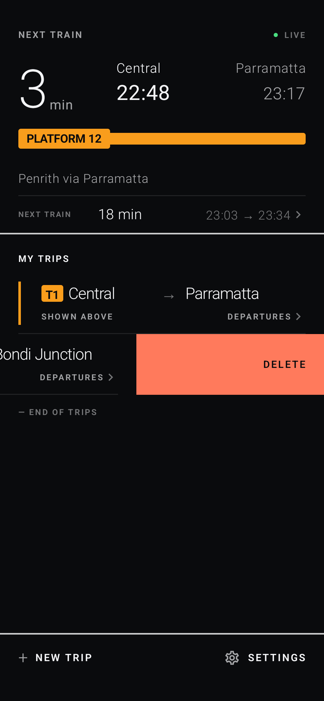
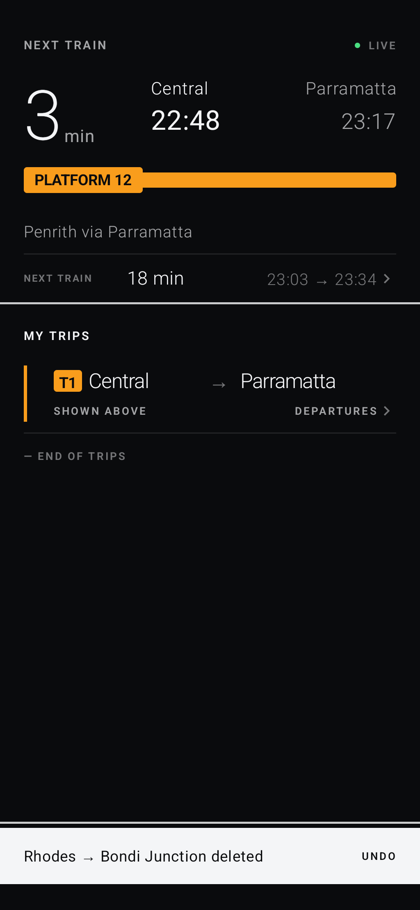
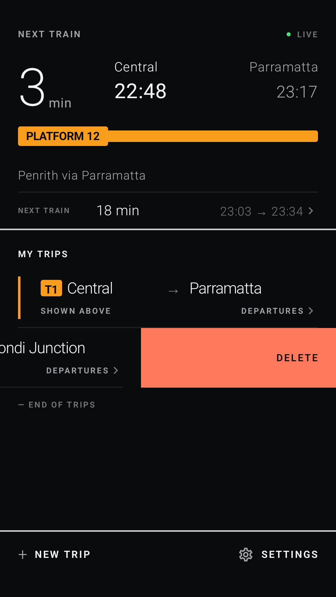
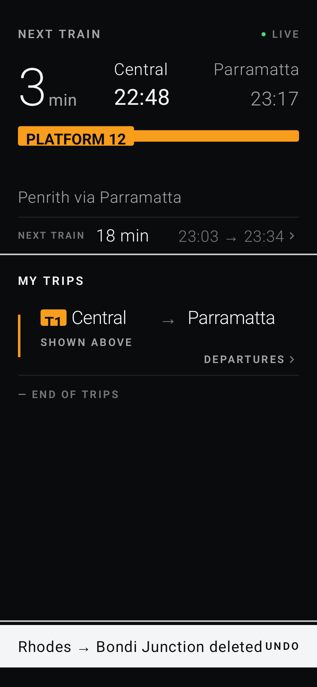
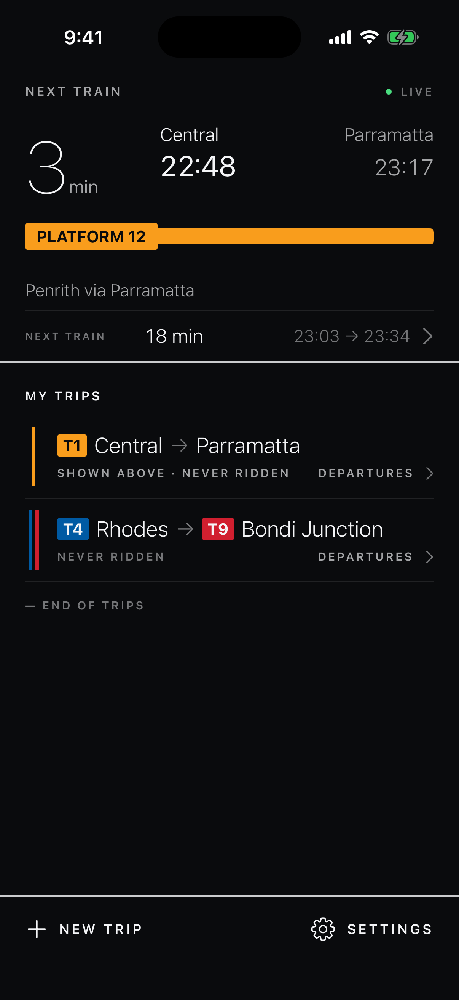
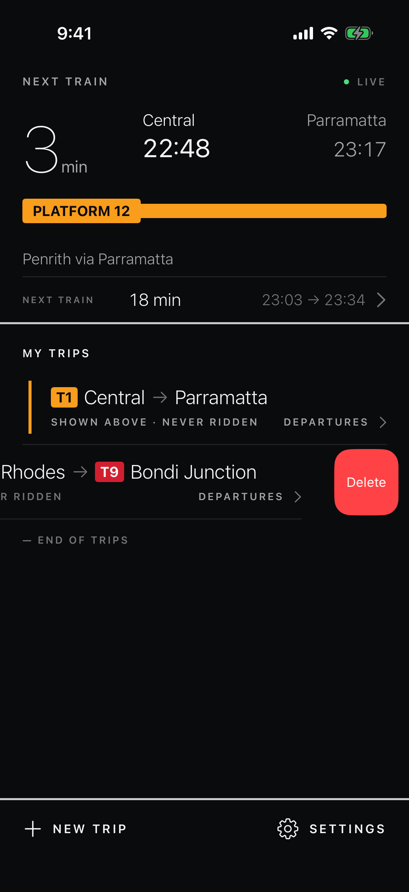
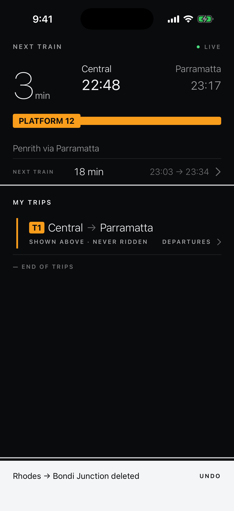

Both apps now delete a saved trip with the platform's own swipe, and the bottom bar offers Undo for four seconds. Nothing at rest has moved: every existing home frame still matches its baseline pixel for pixel. The frames below are the two new states on each platform, on the same two-trip fixture: Central → Parramatta stays, Rhodes → Bondi Junction is the one being deleted.
THE TWO THINGS TO JUDGE. (1) The Android reveal: a full-bleed warning-coloured background with a small DELETE label at the page margin, uncovered as the row moves. (2) The bar with the label swapped to UNDO. Each is a yes or a note on what to change.
The row is held just past the halfway point, where releasing commits. The background runs edge to edge, like Gmail; the label sits on the page margin. Once released the row fades out and the bar appears. The 412-wide phone is the same composition; the enlarged-text frame shows the bar text filling its one line exactly, which is the widest it can get before clipping.




A short swipe reveals the system's own red Delete button; a long swipe commits without the tap. The list is now a native List so the row gets that button, its haptics and its VoiceOver action for free, and the rest frame is unchanged. The bar is the existing one with its label swapped.


